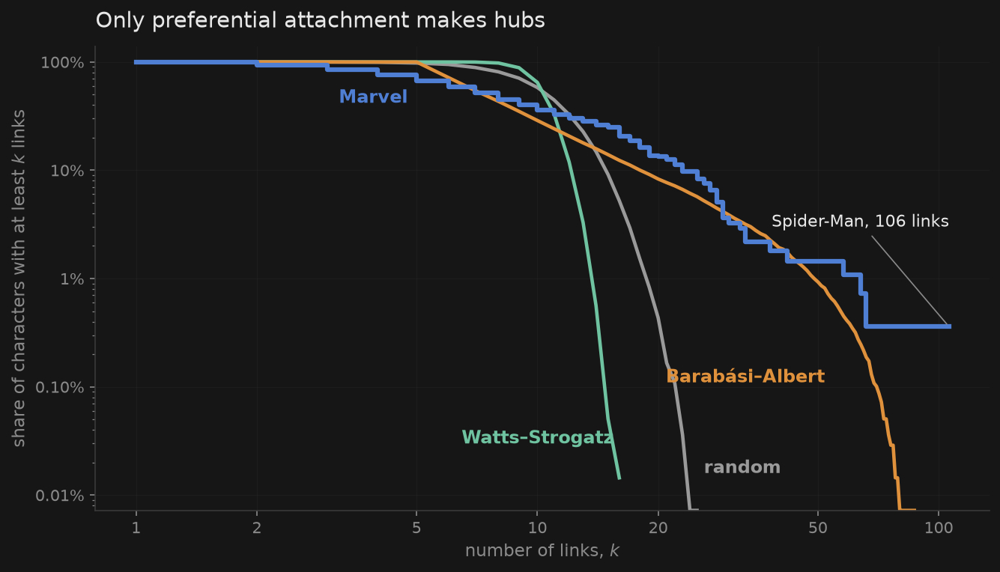
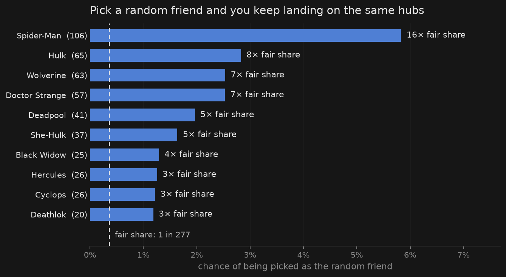
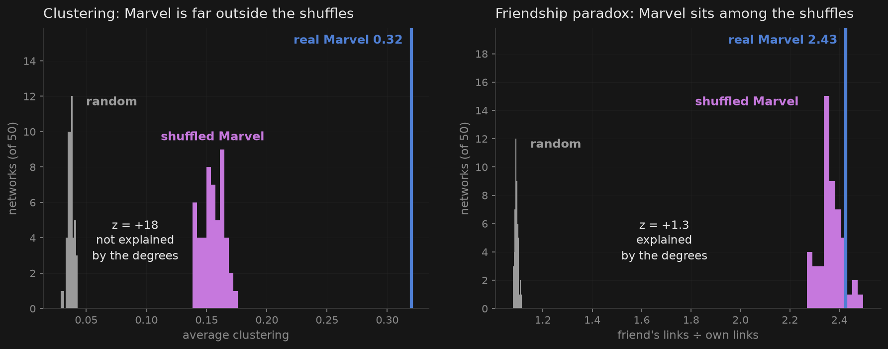

- 8.6×Marvel is a small world. It is 8.6 times as clustered as a random network, at the same distance.
- 0 of 3No classic model gets everything. Random gets the distance, Watts–Strogatz the clustering, Barabási–Albert the hubs.
- 16×Your random friend is a hub. Spider-Man turns up as a random friend 16 times as often as his fair share.
- 58%of Marvel's extra clustering is in the wiring. The friendship paradox is entirely in the degrees.
What we asked
Which classic model looks most like Marvel? And which of Marvel's properties survive a shuffle that keeps every character's number of links but scrambles who they link to?
What we did
Every comparison network has Marvel's 277 characters and about its 1,421 links.
- Random network: links between random pairs.
- Watts–Strogatz: a ring of 10 neighbours each, with 20% of links rewired.
- Barabási–Albert: grown one character at a time; each newcomer brings 5 links and prefers popular characters.
- Shuffled Marvel: Marvel's own links, swapped around until scrambled. Everyone keeps their number of links. This is the null model.
On each we measured clustering, average distance, the biggest hub, and the friendship paradox (a random friend's links ÷ a random character's links).
No model gets everything
| Network | clustering | avg. distance | biggest hub | friendship paradox |
|---|---|---|---|---|
| Marvel | 0.320 | 2.67 | 106 | 2.43 |
| Random network | 0.037 ± 0.003 | 2.66 ± 0.00 | 20 ± 2 | 1.09 ± 0.01 |
| Watts–Strogatz | 0.353 ± 0.015 | 3.10 ± 0.03 | 14 ± 1 | 1.02 ± 0.00 |
| Barabási–Albert | 0.099 ± 0.008 | 2.58 ± 0.02 | 65 ± 7 | 1.82 ± 0.09 |
| Null model | ||||
| Shuffled Marvel | 0.155 ± 0.009 | 2.60 ± 0.01 | 106 ± 0 | 2.36 ± 0.05 |
| Mean ± standard deviation over 50 networks. Bold: the model closest to Marvel in that column. | ||||
- Random network: gets the distance, nothing else.
- Watts–Strogatz: gets the clustering (we tuned it to), but has no hubs and almost no paradox.
- Barabási–Albert: the only one with hubs and a real paradox, but about a third of Marvel's clustering.
Only one model makes hubs

The random network and Watts–Strogatz never get past 25 links. Only Barabási–Albert keeps up with Marvel's tail. It misses the other end: every newcomer brings 5 links, but 33% of Marvel's characters have fewer.
Your random friend is probably a hub

Hubs are friends to many, so they keep coming up as "the friend". Spider-Man alone is 5.8% of all picks, and the top ten are 22%. He is also the only character in our network with no friend who has more links. (Across all 303, Radian would join him: he tops the nine-character island we left out.)
Shuffle Marvel and half the triangles disappear
The shuffle keeps each character's number of links and scrambles the rest. If a property survives, the degrees explain it. If it dies, it's in who links to whom.
z = +18
z = +1.3
kept by design
z = +5, only 0.07 hops

Hubs create some triangles by chance, which is why the shuffle still has four times a random network's clustering. But the degrees explain only 42% of Marvel's extra clustering. The other 58% is in who links to whom.
What surprised us
- Chance gets the distance right. A random network is 2.66 hops across on average, Marvel 2.67. Short paths alone prove nothing.
- Watts–Strogatz has almost no friendship paradox (1.02). It matches Marvel's clustering, but everyone starts with ten neighbours.
Choices we made
Each could have gone the other way and changed a number above.
- Undirected giant component (277 of 303) Distance needs a connected network, and the models are undirected. The other 26 characters are week 1's isolates and island.
- Watts–Strogatz rewiring q = 0.2 The small-world range (0.001–0.1) leaves clustering at 0.49 or more; q = 0.2 matches Marvel. So this model's clustering is fitted, not predicted.
- 5 links per Barabási–Albert newcomer 1,360 links, 4% short of Marvel. 6 would overshoot by 14%.
- Edge swaps, not the configuration model Swaps keep every degree exactly. The configuration model loses links, mostly from the hubs.
- Exact averages, not samples The friendship paradox and friend chances are computed over every character, so there's no sampling noise.
- 50 runs, two-sided test, p < 0.05 Set before looking. With 50 shuffles the smallest possible p is 0.02, so the z-score shows the strength.
What we can't conclude
- That Marvel grew by preferential attachment. The model can make hubs like Marvel's; that doesn't show it did.
- That the degrees follow a power law. The tail is heavy, but week 1's test favoured an exponential.
- Why the triangles are there. The shuffle rules out the degrees, nothing more. Teams and shared storylines are our guess, and a question for week 4.
Reproducing this
Notebooks/Week2/SGI-2.11.ipynb runs on the frozen week 1 data in Data/Week1/ in about 30 seconds. It makes all three figures and writes stats.json, which every number on this page comes from, and it fails loudly if the data-derived numbers change.